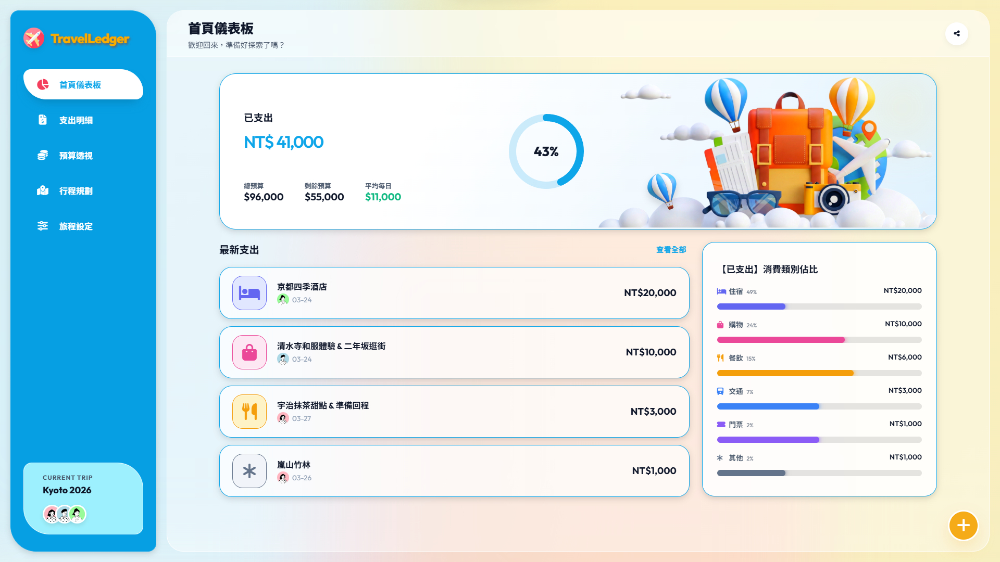
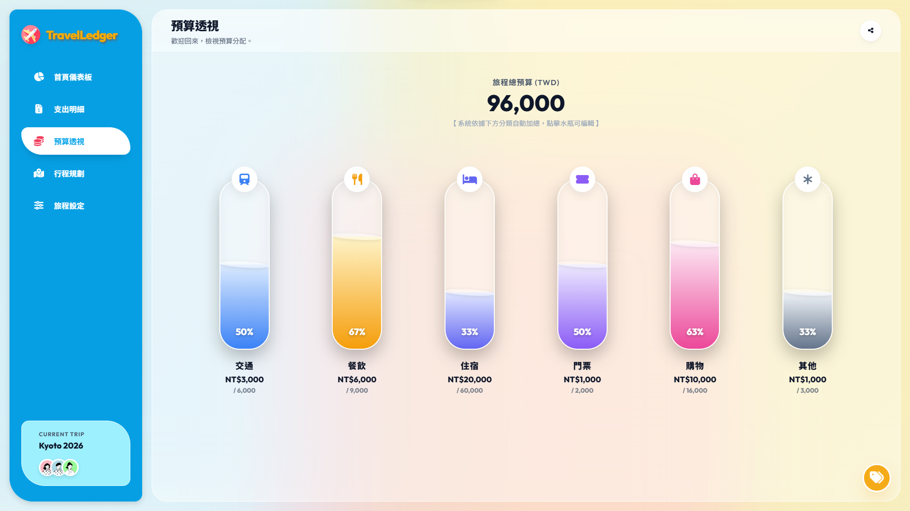
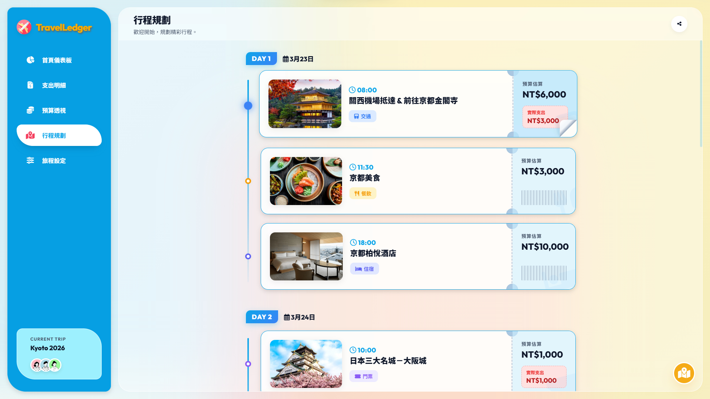
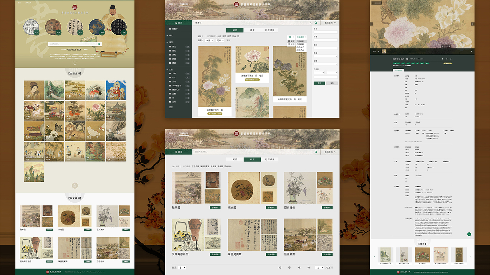
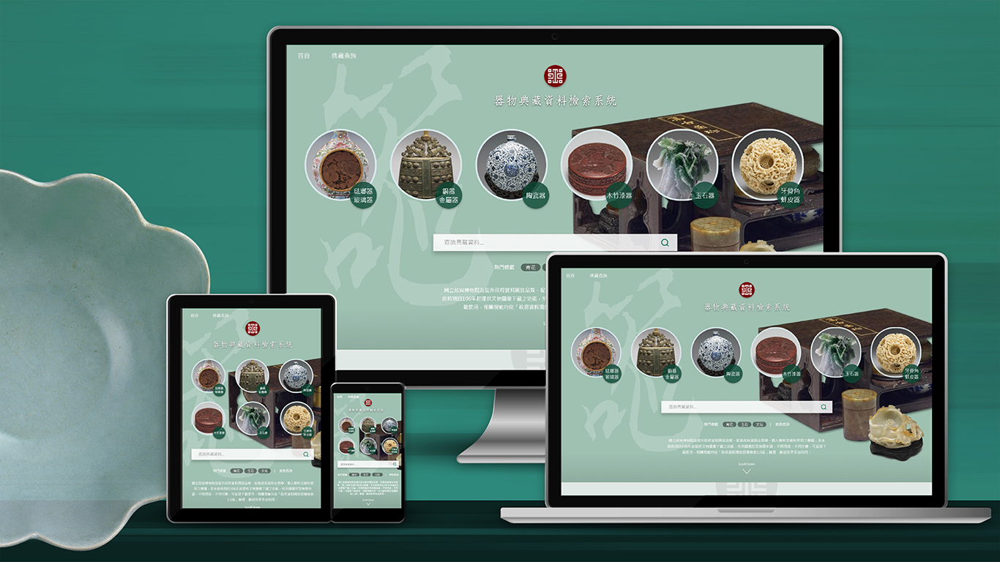
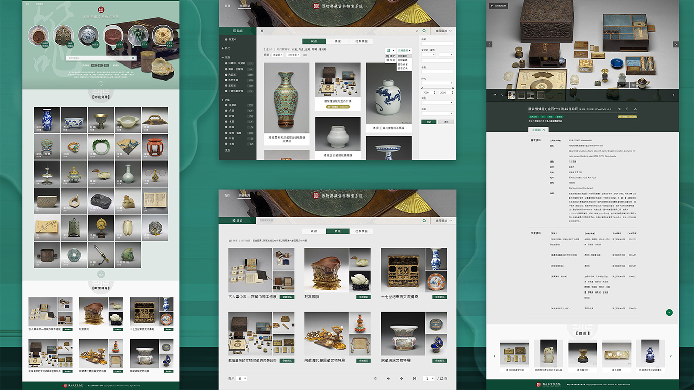
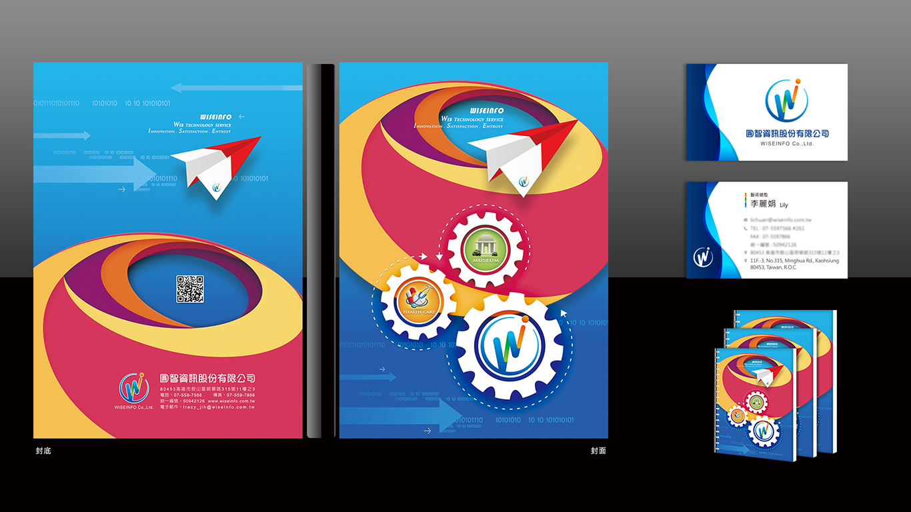
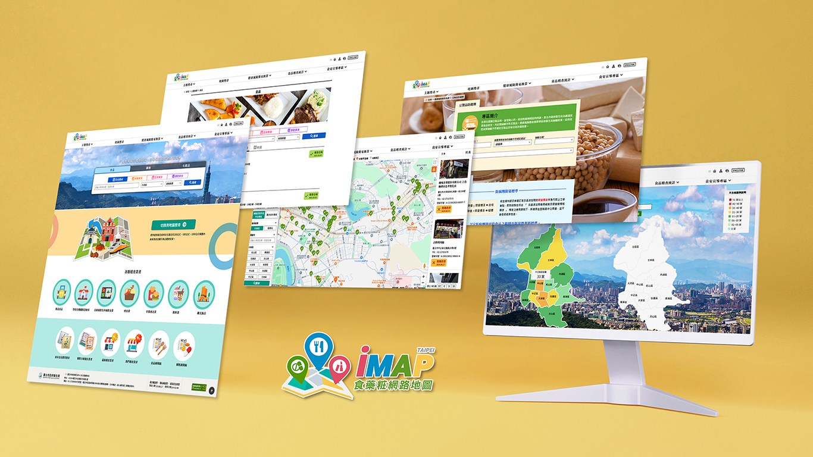
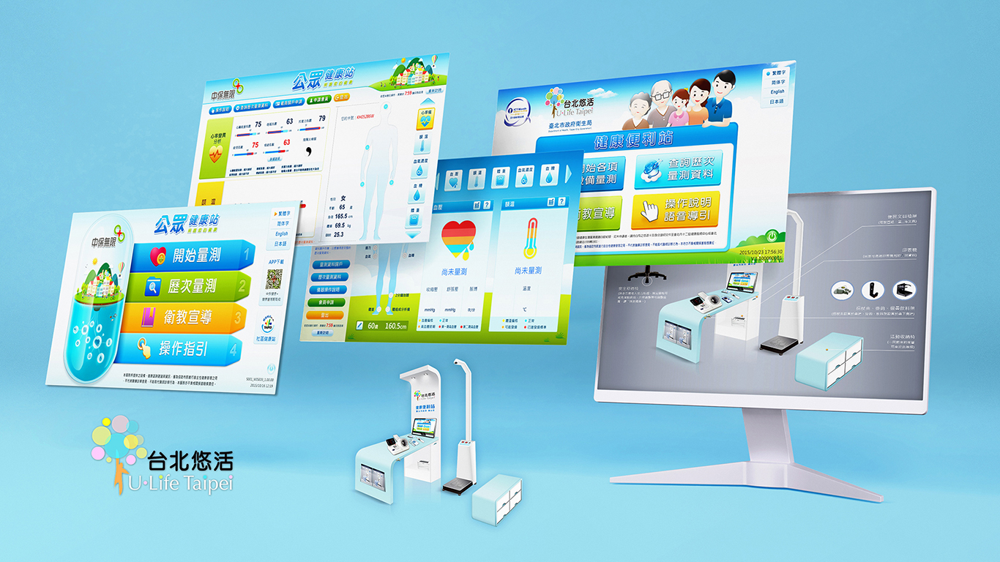

關於我 | ABOUT ME
Hi , my name is Lily. 是一位深耕於 視覺傳達設計與 UI/UX 設計 領域的實踐者，同時具備專案管理與AI 輔助程式開發經驗。我深信好的設計不僅是美學呈現，更是解決問題的關鍵。
近期，我積極學習 AI 技術賦能工作流程，具備獨立運用 AI 輔助全端系統開發的能力。從前期的「需求分析」與「系統設計（包含 Use Case 使用案例圖、ERD 實體關聯圖規劃）」，到中期的「UI/UX 現代化介面與動態設計」，再到後期的「運用 AI 撰寫前端語言、C# MVC 後端邏輯與 SQL Server 資料庫建置」，我能一人貫穿產品的完整生命週期。也能有效地與開發團隊協作，縮短溝通成本，確保設計方案的完美落地。
在專案管理方面，致力於優化工作流程，提升執行效率，並透過對客戶需求瞭解與使用者測試，持續迭代產品，創造兼具商業價值與優良使用者體驗的數位產品。
參與指標性專案經驗 | KEY PROJECTS
🏛️ 國家級博物館與數位典藏系統
- 國立故宮博物院：數位典藏知識庫整合型系統 系統整合
- 國立故宮博物院：4G行動博物館計畫 - Open Data 平台優化
- 國立故宮博物院：檢索系統社群標籤及詞彙索引典機制建置案
- 新北市朱銘美術館：典藏管理資訊系統
- 國立自然科學博物館：自然與人文知識庫整合建置專案、數位博物館虛實整合加值服務推廣行銷計畫
- 國立科學工藝博物館：文物典藏管理系統
- 國立海洋生物博物館：「台灣淡水魚的來龍去脈」特展網站、飛魚專題報導網頁設計
- 國立海洋科技博物館：蒐藏品管理系統
🏥 政府與公共衛生資訊服務系統
- 臺北市政府衛生局：健康雲.悠活臺北網站、健康便利站、行動社區服務計畫
- 臺北市政府衛生局：食藥粧網路地圖計畫建置 地圖圖資整合
- 臺北市政府衛生局：長期藥事服務系統、衛生資訊系統擴充案
- 桃園市政府衛生局：市民卡健康服務網管理系統
- 中華民國總統府：全球資訊網改版建置案 (98年度)
獲獎榮耀 | AWARDS
-
智慧城市創新應用獎 & 百大創新產品獎
作品：臺北市衛生局 | 健康便利站設計 (2014)
-
衛生福利部國民健康署 - 優質獎
作品：臺北市政府衛生局 | 健康雲端資訊入口網 (2013)
-
全國競賽優選與特優
中華民國全國教師會會徽 Logo 徵選優選 (2006) / 全國數位教材研發徵選「E術色」特優 (2005)
近代工作經歷 | RECENT EXPERIENCE
近期開發專案 | RECENT WORKS
TravelLedger 旅遊帳簿與預算管理系統
負責全專案UI/UX 設計、使用案例圖(Use Case)、實體關聯圖(ERD)規劃、運用AI開發全端程式
「TravelLedger」是基於 ASP.NET Core MVC (C#) 框架開發，並採用 SQL Server 作為關聯式資料庫的旅遊帳簿與預算管理系統。本系統不僅提供完整的記帳 CRUD 功能，更整合了行程時間軸與實體圖片上傳至伺服器端的功能。系統內建複雜的分帳演算法與匯率轉換機制，涵蓋了從「行前預算編列」、「旅途中記帳與行程對照」到「行後財務結算」的完整旅遊生命週期。 (點擊下方縮圖可瀏覽大圖)

TravelLedger 首頁

TravelLedger 預算透視

TravelLedger 行程規劃

TravelLedger 支出明細

TravelLedger 旅程設定

TravelLedger_RWD 手機板
精選作品集 | PORTFOLIO

【故宮】數位典藏知識庫整合檢索

【故宮】書畫典藏資料檢索系統 (RWD)

【故宮】首頁、典藏查詢頁、精選頁、文物內容頁

【故宮】器物典藏資料檢索系統 (RWD)

首頁、典藏查詢頁、精選頁、文物內容頁

Logo、官網設計

名片、筆記本設計

【朱銘美術館】數位典藏系統 (RWD)

【臺北市政府衛生局】長期藥事服務系統 (RWD)

【臺北市政府衛生局】食藥粧網路地圖(RWD)

【臺北市政府衛生局】健康便利站設計

雲端資訊中心監控管理平台